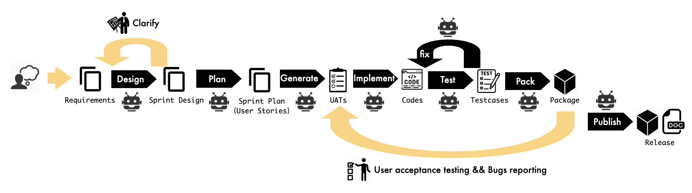

从 Vibe Coding 到 Vibe Engineering
使用 Vibe Coding 开发 Dogent 是一场实验，目的是验证第一梯队的 LLM（GPT-5.2 Codex High）和 Coding Agent（Codex CLI）的能力边界（此时 GPT-5.3 Codex 已发布，但尚未开始使用）。
这篇博客记录了实验的全过程：从最初的自由探索，到逐步引入结构化 Spec 流程，再到 Spike 驱动、可观测性设计、面向上下文的架构解耦。每个阶段的挑战、解决方式、最佳实践与思考，构成了一个完整的演进轨迹 —— 这个轨迹比 Dogent 本身更有价值。
第一阶段：自由探索，测试 AI 自主迭代的规模边界
项目最初阶段是纯粹的 Vibe Coding。打开 Codex，描述一个大致想法，根据 AI 的回应逐步细化，直接运行生成的代码，发现问题再继续对话。这种模式在小规模时效率惊人：不需要预先设计架构，可以边做边想，几小时内就能看到一个功能的雏形。
Dogent 中的模板系统的原型就是这样诞生的。我只说了一句 "我需要一个模板系统，用户可以在提出写作需求的时候选择对应的文档模板"，然后 AI 在一次对话中就生成了包含模板加载、解析、应用的基础实现。这种体验确实让人上瘾。
然而，当经过最初几个迭代后，代码规模大致突破 2000 行时，问题开始密集出现。
首先是由于没有清晰的流程和过程记录，前面提过的要求会被 "遗忘"，后面提的要求可能和前面矛盾。我们早期约定用 @ 符号引用本地文件，但有有时 @ 又是用户本意输入的字符。让 Codex 修复这个问题后，它又把通过 @ 引用文件的功能给搞丢了。
更麻烦的是，当 Codex 开发陷入混乱后需要 git 回退时，我发现很难找到一个干净的回退点 —— 因为每次变更中都掺杂着好的修改和有问题的修改，要么全要，要么全不要。
可见，虽然 Codex 能帮我们完成了代码编写，但是想要持续的控制代码的一致性，一定的过程控制和文档记录是必不可少的，这些都需要软件工程的支撑。
通过这个阶段，我摸到了一个重要的边界：基于行业先进的模型（GPT-5.2 Codex high），在没有任何过程管理的情况下，能够完全自主迭代的代码规模大约在 2000 行 Python 左右。
这对普通人意味着， AI Coding Agent 带来的机会在于 2000 行以内规模的代码脚本或轻应用，完全可以让 AI 自主实现，不需要懂任何代码和软件工程。
超过这个规模，需求矛盾、上下文丢失、代码混乱等问题就会让迭代变得举步维艰，这时必须引入工程化的过程管理。
第二阶段：Spec 驱动，建立结构化开发流程与规模化支撑
测试完自由探索模式的规模边界后，我开始引入 Spec 驱动的开发流程。但并没有一上来就套用 OpenSpec 或 SpecKit 等完善的全套流程，而是根据 Dogent 的项目特点，从简单开始逐步配置和演进出匹配 Dogent 特点的 Spec 规范。
最初的流程很朴素：Requirement → Design → User Story → Implement/Test → UAT（用户验收测试）→ Release。每个阶段都严格按照迭代增量开发，使用对应的文件来记录过程和产出。每个迭代必须从一个 clean 的 git 状态开始（或者一个独立的 git worktree），开发完成并通过 UAT 验收后，提交 git 完成一次发布，同时归档所有过程文档，然后进入下一个迭代。
在需求阶段，我手动更新 requirement 文档，提出新迭代的原始需求。然后由 Codex 进行初步的 design —— 之所以把设计提前到 User Story 拆分之前，是因为类似 Dogent 这种工具类软件的 user story 一般端到端比较短，前期并没有复杂的软件架构和用户交互设计，主要的设计复杂度在于如何能够把新的需求与现有代码进行融合，以及识别和处理各种 corner case。
因此需要让 Codex 拿到原始需求之后就开始 design，然后基于 design 的结果拆分 User Story。
另外，在 design 阶段，需要让 Codex 主动与人进行设计澄清，把最终达成一致的设计结果写入迭代对应的设计文档中。接下来让 Codex 根据原始需求和设计结果再拆分 User Story 并按照优先级和依赖关系进行 Story 排序，这时得到的 User Story 列表质量会比较高。
另外，Codex 生成的 User Story 需要具备端到端价值、能够进行 UAT 测试。因此 Codex 要为每个 Story 设计相应的用户验收测试（UAT）：这是给我使用的手动验收用例以及操作步骤指导。
上面这些文档都产出后，最后让 Codex 逐一按照本迭代中 User Story 的顺序进行全自助的代码编写和自测，
注意，这里的自动化用例设计和自测，也完全由 Codex 设计开发和执行，我是不参与的。
在 Dogent 的开发中，基于 xUnit 框架的自动化测试的主要作用是给 Codex 的 Agent Loop 提供一个自反馈信号，让 Codex 能够通过构建和自动化测试进行自我驱动。当然为了能够自回归，每个 UAT 我都要求 Codex 同时有一个等价的自动化测试用例，其它的测试用例我是完全不管的。最终端到端的质量把控是通过我本人手动执行 UAT 操作以及通过真实的写作使用来保证的。
用户验收过程中，我按照 UAT 用例中的操作步骤，手动完成验收，然后在 UAT 文档下面更新每个用例的状态（PASS/FAILED），以及为失败的用例记录问题描述，然后让 Agent 进行 fix，直至所有 UAT 通过。
最后当所有 UAT 都通过后，让 Codex 完成本迭代的发布和归档：更新每个 Story 的状态，生成 ChangeLog，归档本迭代所有文档，提交 git，打包发布新的 wheel 包。
后来随着软件变得复杂，为了完成复杂 bug 的记录和 fix，我又增加了一个记录 issue 的文件和相应的 Spec 流程，用于支持通过 bug 驱动 Codex 进行设计和代码的变更，

通过上述 Spec 驱动的流程，Dogent 的代码规模顺利的接近到了 20000 行，同时保持了较好的可维护性。人只需要关注需求的表达、设计的澄清以及最终的用户验收，全程无需手写任何一行代码或测试用例代码。
不要小看 20000 行代码，很多程序和工具的代码规模已经能被 Cover 住了。要知道 Spec 驱动的门槛是很低的，这意味着一个稍有工程素养但不完全会编码的人可以独立完成很多工具应用的开发了。
此外，这也意味着，如果架构师能够把复杂软件中每个模块的规模拆分到 20000 行以内，且能做到让它们之间保持松耦合，那么在整个系统的开发过程中，人基本可以不用直接编码了。
这并不意味着软件的本质复杂度降低了或者对人的能力要求变低了，而是需要人和 AI 重新进行能力适配和职责定界，以便于获得更高的开发效率。
第三阶段：Spike 驱动，独立上下文的解决方案探索与验证
当软件规模变大后，一些比较复杂的特性或者难以解决的 Bug，直接让 Codex 一边探索解决方案一边进行正式开发往往不是最优选择。这时最好能把针对该特性或问题的解决方案探索阶段独立出来 —— 这就是 Spike 驱动。
Spike 的核心原则是上下文隔离。负责 Spike 的 Agent 和 Codex 完全分开，各自有独立的上下文。
Spike Agent 主要关注当前特性或问题本身，需要联网搜索解决方案，需要写简单的原型代码进行验证，但不需要知道整个项目的全貌和代码细节。这样可以专注于方案探索，不会被主项目的复杂上下文干扰。
当 Spike 结束后，让 Spike Agent 将最终解决方案和示例代码进行总结，按照约定的格式归档到对应目录下。之后再让 Codex 参考 Spike 结果在正式代码上进行增量设计与开发。
从架构角度看，Spike Agent 天然适合作为一个独立的 sub agent 存在：它的 context 独立，关注的知识空间、输入输出、工作流程都与主 Agent 有明确的边界。但是由于 Codex 原生并不支持 sub agent 配置，所以我就再单开了一个 Dogent 专门做调研和 Spike，然后输出 Spike 总结文档给 Codex 用。
目前 Claude Code 对多 Agent 的支持比 Codex 要好，包括最近专门推出了 Claude Agent Teams 的能力，国内的 KIMI 2.5 也提供了 Agent 集群的能力。
多 Agent 协同会是 2026 年快速发展的能力，但我的经验是除非能让并行 Agent 之间的的任务相互独立、或者交互结构稳定并松耦合，否则就会掉入 "协作者陷阱"：增加智能体数量带来交互协作规模激增，不但不能提升性能，反而导致效率下降、成本攀升、准确性降低甚至整体崩溃。
在这个阶段的另一个重要经验是：如果开发失败了，不要在当前基础上让 Agent 改来改去，也不要人工辅助 Agent 进行修改。更好的做法是把当前的项目修改回退掉，清理干净，然后启动 Spike Agent 从头开始探索。等方案探索清楚后，把应该怎么做（包括独立的示例代码）清晰地整理出来，然后输入给主 Agent 重新开始。经过实践对比，这样做的效率更高。
在 AI Agent 时代，一旦遵循纪律，有好的过程记录和 git 管理，就要敢于放弃当前工作，清理工作区重来。
以前我们开玩笑说 "好的软件就得做两遍"，现在有了 AI Agent，做两遍的成本大大降低了。因此一上来就要抱着做两遍的心态：第一遍是为了探索和尝试，探索结束后归档，然后切换主 Agent 进行正式开发。
第四阶段：可观测性设计，构建 AI 可理解的系统状态表达与沟通语言
当软件变得复杂，各种交织的 bug 会不断涌现。让 Agent 解决 bug 是必然的，但如果仅仅给 Agent 描述 bug 表现，分析起来是低效的 —— 毕竟引起相同现象的原因不止一个。这时软件的可观测性设计就变得至关重要。
Dogent 开发中第一个重要的非功能性需求就是可观测性。由于 Dogent 本身也是个 Agent，除了常见的分级 log 机制，还需要对 Agent Loop 调度过程中的所有关键事件进行追踪：
用户原始输入 → 用户输入被替换成的完整 user prompt（模板参数注入后的结果）→ 发送给 LLM 的原始消息 → 接收到 LLM 的原始消息 → Agent 进行消息分解变成的 Action → 不同 Action 的执行结果 → 给用户显示的消息 → 下一个循环……
这样一条完整的事件链路记录下来，当出现问题的时候，只要把问题描述加上完整的日志文件发给 Codex，然后就等它进行问题分析和解决。有了这些 "证据"，Codex 定位问题的准确性和效率都会提高很多。日志成了与 AI 沟通的通用语言 —— 它不需要进行推测和假想，只需要分析日志中的证据链。
如果你开发的软件本身是一个 Agent，可观测性设计尤为重要。Agent 作为用户、LLM 和工具之间的协同者，中间存在很多概率性决策。可观测性不仅可以用于在 Agent 出现不符合预期情况时进行溯因，更进一步要用于 Agent 进行评估和优化。可以说，没有好的可观测性，就很难持续评价和改进一个 Agent 系统。
第五阶段：上下文友好架构，面向 AI 效率的模块化与解耦设计
当软件规模进一步增大，另一个挑战开始浮现：上下文消耗过快。
Agent 每次开发都需要阅读和查找相关的代码文件，将其放入上下文中。常见的会过快消耗上下文的不良架构现象有： - 某些高频修改的文件过大，Agent 必须阅读和加载它，势必会一次消耗很多上下文； - 目录和文件组织不合理，Agent 查找的范围大、效率低，容易读入过多不相干的代码； - 架构中存在 "霰弹式修改" 问题，Agent 为了完成某一修改需要遍历散落在多处的代码，不仅会让 Agent 上下文消耗过快，而且还容易遗漏。
在 Dogent 的开发初期，Codex 把所有源码文件都在一个目录下平铺，并且其中最高频修改的一个文件超过 5000 行。这导致 Codex 每次工作都需要加载这个超大文件，并且 grep 的范围是整个目录下所有文件，效率低且上下文的消耗快。
意识到这个问题后我果断驱动 Codex 对 Dogent 进行了一次重构：要求它将超大文件解耦拆小，将文件按照内聚性划分到不同目录下的独立模块中。Codex 单独运行很久，没有中断地完成了这次重构，结果完全符合预期。随后我更新了 Codex 的规则文件，把新的逻辑和物理架构设计固化下来，后面每次 Codex 加载的上下文明显下降。
这个阶段的核心经验是：AI Agent 辅助软件开发，架构需要考虑如何面向上下文进行设计。
传统上我们将软件解耦，是为了降低人理解和修改代码的复杂度。在 AI Agent 时代，软件的复杂度应该用消耗的上下文 token 来度量 —— 消耗得越多，证明软件越复杂越 "费脑"。
在 AI Coding 时代，软件的松耦合体现在：每个开发任务都能拆分到有限的 context 之内完成，外部依赖少，没有霰弹式修改。从 "人的开发效率" 到 "兼顾 Agent 的开发效率和上下文开销"，这是架构设计一个重要的关注点变化。
洞见与反思：从 Vibe Coding 到 Vibe Engineering
经过五个阶段的演进，验证了一些关于当前 AI Coding Agent 能力边界的判断，也引发了对软件开发中一些关键实践和决策的重新思考。以下是我从这场实验中获得的一些总结，它们共同勾勒出从 Vibe Coding 迈向 Vibe Engineering 的重要路径。
1. 流程即代码：内建且自适应的软件工程规范
Spec 驱动的有效性表明，对于稍微复杂且需要持续迭代的软件，清晰的流程规范和过程管理是必须的。
然而不同于传统软件工程中流程独立于软件之外，主要承载在流程部门制定的规范文档和软件交付流水线中。在 AI Agent 时代，流程规范不仅必须能被 Agent 理解、加载和执行，并且也不再独立于软件之外，而是应该内建于软件之内。
在 Agent 时代，构建一个软件的工程结构，意味着需要同时构建符合它特点的内建流程 Spec；参与一个软件的开发过程，获得源代码工程结构的同时也就拿到了它可执行的流程规范。
与此同时，流程具备了自我演化和自适应的可能，每个软件都可以根据自己的特点拥有自定义和自适应的流程规范。
我们看到 ReAct 类型 Agent 的出现基本上宣告了静态 workflow 的边缘化；同样的，无论瀑布、敏捷还是 DevOps 方法中对不同类型软件开发所定义的静态 workflow 流程规范，在 AI Coding Agent 时代也要重新审视。
随着 AI Agent 的发展，软件类型会更加细分和多元，流程也需要能够高度自适应。没有流程是不行的，但一上来就套一个复杂的僵化的流程也是不高效的，最佳的方式是根据软件特点为其制定贴身的 Spec。
由于 AI 本身可以辅助进行 Spec 定义和优化，因此流程的制定和修改变得低成本，于是随着软件的复杂度变化为其动态调整 Spec 是可行且有意义的。
软件、文档、工程和流程，都应该是代码化的，保持内聚、高度对齐与同步演进的。
2. 克制与节奏：AI 时代开发效率的纪律性平衡
Vibe Coding 有一种诱惑，就是想一次让 AI 完成很多的开发任务。
当软件简单的时候，一个 Release 中可以包含多个 story，一次让 Agent 开发完成。但当软件规模变大，就需要控制让 Agent 一次完成的 Story 规模，否则容易上下文过载而失败。另外就是要严格遵守 Spec，不要为了图快跳过某些步骤进入自由模式 —— 否则很快也会付出自由的代价。
另外一个诱惑，就是想让 Agent 在后台无休无止持续工作。
使用 Coding Agent 后我一度有一种错觉，觉得不让 Agent 在后台持续工作，直至把自己本周的 token 额度用完，就是在浪费自己的模型订阅费，在暴敛天物。
但事后发现，在自己没有想清楚的时候，Agent 的工作大多数时候是浪费。当 token 额度不够了就开始干着急，后悔没有把 token 花在刀刃上。
因此这里也要控制欲望 —— 在启动 Agent 之前，先把问题想清楚。花时间写一份清晰的需求或设计，或者编排好任务顺序，比让 Agent 盲目运转高效得多。
3. AI 原生架构：面向上下文解耦的可观测软件架构
在 AI Agent 成为主要编码者的时代，软件架构的设计原则需要考虑新的维度。传统的 SOLID 原则和模块化思想依然有效，但必须加入对 AI 工作方式的考量。
可观测性从运维工具变为开发必需品。在传统开发中，日志、指标和追踪主要是为了运维和调试。但在 AI 辅助开发中，可观测性成为了开发阶段的核心设计考量。结构化的日志不仅是调试工具，更是人和 AI 协作的沟通记录 —— AI 的决策过程、执行路径和遇到的问题都需要透明地记录，这样才能让后续的 AI（或人类）理解 "当时发生了什么"。当软件本身是一个 Agent 时，这一点尤其重要：从用户意图到 AI 决策再到执行结果，整个事件链都需要被完整追踪。
避免霰弹式修改成为架构目标。"霰弹式修改" 这个传统的代码坏味道在 AI 时代危害更大。AI 在有限的上下文中可能看不到完整的依赖图，容易产生看似正确但实际破坏一致性的修改。对策是最大化功能内聚性：让相关的代码在物理上靠近，模块边界清晰明确，复杂子系统用简单接口封装。这样 AI 在修改某个功能时，可以在一个有限的上下文中完整理解所有相关代码。
依赖关系的显式化。隐式依赖是软件复杂性的主要来源，在 AI 时代这个问题被放大了。AI 可能无法理解那些 "不言而喻" 的约定。静态依赖需要通过类型提示、接口定义和依赖注入来显式表达；动态依赖需要通过日志记录和追踪 ID 来关联；架构级依赖需要通过文档和自动生成的模块关系图来维护。尽量避免使用动态类型技巧、元编程魔术和隐式配置 —— 这些对人类可能是 "高级技巧"，对 AI 却是理解障碍。
业务到实现的直接映射。从用户需求到代码实现的路径应该尽可能短且直白。这对 AI 的好处显而易见：从用户故事可以直接找到相关代码的入口，变更需求时容易定位需要修改的位置。实现方法包括领域驱动设计（让代码结构反映业务领域）、用例驱动架构（每个用户用例对应明确的代码路径）、自文档化代码（通过命名和结构表达业务意图）等。
面向上下文的模块化。这是第五阶段经验的理论化延伸：模块的大小应该小于 LLM 上下文窗口的可用部分。虽然先进模型的上下文窗口在持续变大，但人们希望 AI 能解决的软件规模也在变大，Attention 和 Context 永远是稀缺资源。因此架构解耦的效果应该考虑面向上下文占用进行度量，目标是软件变更能做到让 AI 可以在单上下文窗口内完整理解、分析和修改。接口的清晰性也变得尤为重要：好的接口应该自我描述、最小化、稳定且错误明确。
4. Token 经济学：面向 AI 开发成本与性能的架构优化
在 AI 驱动的软件开发中，最终的开发成本将越来越多地折算为消耗的 token 数量。Token 背后对应着真实的计算量和能源消耗，未来很可能成为成本核算的主要标准单位。随着模型上下文窗口持续扩大，Agent 能够 "不掉线" 地处理更长的任务链，AI 开发和接管的软件规模也会随之增长。此时 token 将成为关键的稀缺资源 —— 它不仅直接决定开发成本，也深刻影响整体效率。
Agent 时代，减少 token 消耗会是一项非常重要的性能优化任务。例如，优化 Prompt 设计，减少不必要的上下文加载、实现模块化设计以限制每次变更涉及的代码范围等都能有效降低 token 消耗。这与传统架构优化中减少内存占用或 CPU 周期的思路一脉相承，但度量标准变成了 token。
Token 成本与开发速度之间存在天然的权衡。项目早期追求快速验证，用 token 换迭代效率。到了软件规模化应用阶段，token 优化就会成为非常关键的工作。在实际项目中，需要根据软件的生命周期、团队资源以及市场窗口，动态调整这一平衡点。
因此，在 AI 原生架构中，面向 token 的性能和成本优化不再是一个可选项，而是必须内建于设计原则之中。它要求我们从 token 的视角重新审视模块边界、接口设计、可观测性实现，让软件不仅在功能上正确，也在经济上高效。
展望未来，token 可能不仅仅是成本单位，更可能演变为一种经济系统。如果此 token 未来与加密货币 中的 token 挂钩，让开发成本与价值在数字世界中直接形成闭环，将开启全新的协作与激励模式，这是一个很有想象的事情。
5. 复杂度转移：从代码调试到文档与概念一致性的管理挑战
当代码主要由 AI 完成时，人最终管理的是代码之外的那些自然语言描述 —— 全量需求、设计约束、背景知识、边缘场景…… 的一致性。
举个例子。当我说 "需要 Dogent 支持使用向上键回翻之前的历史输入"，这看起来是一个简单的需求。但一旦开始实现，一系列一致性问题就浮现了：只回溯历史用户输入还是也回溯历史命令？如果回溯历史命令，命令如何保存，保存在哪里？是否和历史用户输入保存在同一个文件？如果用户使用 /clean 命令清理过或者 /archive 归档过，还能回溯吗？回溯的顺序是什么？跨会话吗？……
每个问题的答案都会影响其他问题，而这些答案散落在各种需求文档、设计文档、历史对话中。
随着 Dogent 的开发深入，Agent 需要参考的需求、设计等文档越来越多。增量需求描述和历史需求文档中开始出现各种不一致和矛盾。各种隐含的信息和逻辑约束需要在自然语言文档中维护并保持一致 —— 而这远比想象中困难。
传统软件开发中，这种一致性问题被代码本身 "吸收" 了一部分：代码是最终的真相源，文档可以有歧义但代码不能。但当代码主要由 AI 生成时，代码的演进依赖人类管理和输入的自然语言描述。复杂度从调试代码转移到了调试文档上。
这里需要明确一个关键分工：代码保证了最终实现的逻辑一致性，而文档用于人与历史以及外界对接的一致性。在 AI Agent 辅助开发时，这两者各司其职，但它们的一致性也需要共同维护。
人虽然不用直接编码，但需要保证外部需求、背景知识与文档的一致性，以及与 AI 协助完成的文档与代码之间的一致性。AI 则负责最终实现代码的一致性，确保代码逻辑正确、无矛盾且符合设计约束。
因此，软件的复杂性并没有下降，只是人与 AI 的分工、职责定位发生了变化，重新获得了帕累托最优。Vibe Coding 把 "写代码" 这个任务外包给了 AI，但 "保持概念一致性" 这个任务依然留在人这边。而且因为代码生成速度变快了，不一致性更容易累积，这是需要警惕的。
换句话说，软件开发的复杂度并没有消失，只是从代码转移到了流程控制、以及中间产生的所有自然语言文档的维护上。需求变多时，后面提的需求和前面的会有矛盾，术语之间出现冲突，规则之间出现不一致…… 这些充斥在需求文档和设计文档各处。如何通过好的 Spec 和过程文档进行管理、澄清、修正和重构，都是在代码之外的复杂度。
最终，软件开发依然是一项学习的过程，依然是一项知识工程。这些没有变。
总结与展望
从 Vibe Coding 到 Vibe Engineering 的演进，本质上是将 AI 的能力与软件工程的严谨性相结合的过程。我们探索了在不同规模下 AI 辅助开发的有效模式，也看到了流程规范、架构设计、可观测性等工程要素在 AI 时代的新内涵。
未来的软件开发，不会因为 AI 的参与而变得简单，而是会变得更加高效和智能化。人与 AI 的分工将不断优化，各自专注于最擅长的领域：人类负责需求理解、概念一致性维护和战略决策，AI 负责代码实现、自动化测试和细节优化。这种协作模式有望释放出更大的生产力，推动软件行业进入新的发展阶段。
这场实验只是一个起点。随着 AI 技术的持续进步，我们期待看到更多创新的开发范式涌现，让软件创作变得更加 accessible，也让更多有创意但未必精通编码的人能够将自己的想法变为现实。